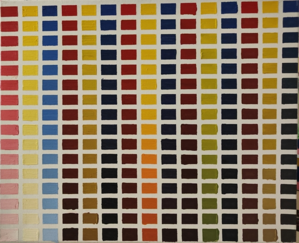
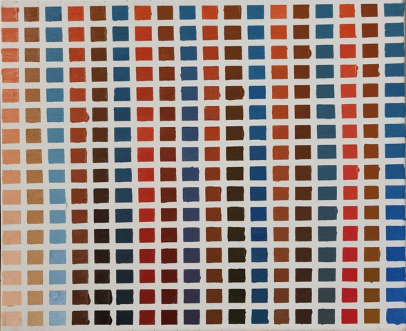
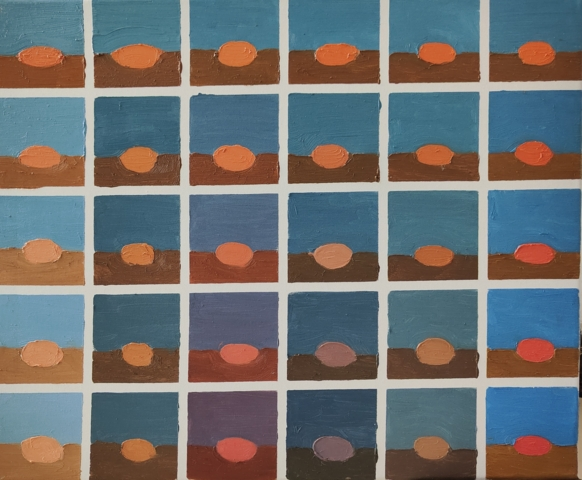
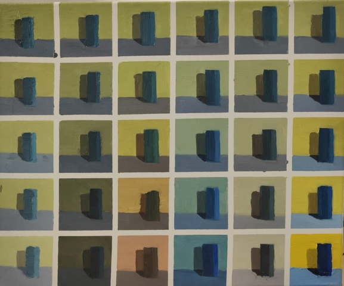
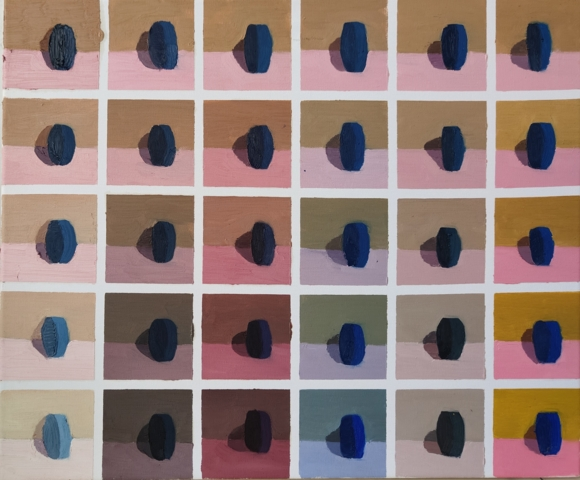

色彩训练#
- StartAt:
2023-09-23
- EndAt:
2023-10-07
- RecordAt:
2024-05-04
国庆用尽了所有年假，回晓飞老师那里学习色彩。
作业以 cs (Color Transposing) 为 ID。
色彩的几大研究方向#
- 文化色彩
在特定民族、地域、宗教、政权有象征意义的色彩，例如：
据 📖 五德終始說 周朝为火德所支配，故崇尚红色
基督教中，蓝色象征着神性，而黄绿色则代表着背叛 （来源请求）
- 心理色彩：
从
🧑🎨包豪斯开始发展（TODO）伊頓→🧑🎨康定斯基将色彩与形状关联起来 →保罗·克利→阿尔伯斯延伸了伊頓的研究，成立了黑山学院色彩并置之后的视觉反映安迪沃霍尔、德库宁都和黑山学院有联系
- 视觉色彩
物质性的色彩。文艺复兴，印象派时期开始被重视。主要的课题是：
光色的研究
错觉的产生和避免
参见
创作课中色彩相关课程
色彩的基本概念#
关键词：纯度、色相、冷暖、明度、对比度、色序、色距。
- 训练用三原色#
从
#️⃣原色我们已经知道基于红黄蓝（RYB）的 伊頓十二色环 是不准确的的，而显示器行业使用的红绿蓝（RGB），印刷业用青品黄（CMY）都更加精 准。从完备性的的角度看，我们用 CMY 能获得更大的色域，更少的纯度损失。 RYB 作为三原色依然有其优点：
作为传统的美术三原色，颜料购买方便，且对应的色料成分简单，性质稳定
RYB 及其相近色在日常生活中比 CMY 常见，调色距离较短
在 良好的定义 下，使用红黄蓝作为原色的色彩训练依然是有意义的。 我们使用如下颜料作为三原色：
- 红#
大红，PR21，不透明
- 黄#
中黄: PY1-PY65-PW6，不透明
- 蓝#
钴蓝，PB15-PB9-PW6，半透明
另外还需要：
- 白#
锌钛白，PW6-PW4，不透明
- 黑#
煤黑，PBk7，不透明
PXX 为色料号（Color Index），可在 https://www.paintlibrary.art/pigments/ 查询
训练中尽量使用不透明颜料便于修改，并使混色后的行为更加可预测。
若无其他说明，下文的红黄蓝黑白均指代上述的颜料。
三大重要概念（色彩三要素）：
- 明度#
一个漫反射表面所呈现的明度由投射的 光的明度 和 该表面的 固有色的明度 共同决定。
其中固有色的明度相对来说 可变性大、可设计，即在实际写生中可灵活修改。 例如：写生时人的肤色、发色可变性小，衣服可变性大。
固有色越明度越高，对光的反映越敏感，反之则越迟钝。
我们定义黑的明度最低，白色的明度最高。
- 冷暖#
替代「色相」，冷暖是一种符合人类直觉的，对 色相相对关系 的描述。
人对「红橙黄绿青蓝紫」等绝对色相认知有差异，甚至对某些含糊的色相，同一个人也可能判断混淆。 但在两个给定颜色之间，明确判断颜色冷暖是不经训练或稍经训练就能做到的。
在这个训练中，冷暖关系不变，色相不变。
定义蓝为最冷
定义红为最暖
黄为暖色，但程度低于红
备注
这里可以看出这个系统是不对称的
- 纯度#
或称「饱和度」，饱和度在不同的色彩模型中有不同定义， 但基本都作为色彩鲜艳程度的量化，本训练中亦如是。
几个基本事实：
Helmholtz–Kohlrausch effect揭示了人眼中 色彩的鲜艳程度和亮度是互 相关联的，红色看起来天然地比蓝色鲜艳。在基于颜料混合的混合模式（減色混合）中，鲜艳程度在混合后 几乎总是降低的，因此基于有限的三原色得出的其他色相的纯度总是低的，这个系统 外存在同色相的更鲜艳的颜色
人很容易判断同色相之间的鲜艳程度，而不同色相之间的感觉相对含糊
因此，本训练不以视觉鲜艳为纯度的评判标准，而以 颜色距离原色的调色距离 定义 纯度，原色纯度最高，基于原色调配出的间色次之，黑白纯度最低。
备注
所以，这个训练中假设我们说「蓝色的纯度比紫色高」，是说 钴蓝 比 钴蓝+大红 混合而来的 紫色 纯度高。在这个色彩空间之外，可能存在同色相的紫色，其视觉的 鲜艳程度比钴蓝高。
- 补色#
颜色 A 与颜色 B 等量相加能产生中性灰，则 A B 互为补色。往颜色中添加补色， 色相不变。
点彩派新印象派，补色并置，宁静的氛围
提示
画派的诞生总是先理念，后风格
- 色序色距#
用来描述颜色之间某个要素（纯度、冷暖、明度）的关系：顺序和距离。
以明度举例：红黄蓝的色序是 黄（最亮）> 红（次之）> 蓝（最暗）。 其中，黄与红的色距（明度差异）要大于红与蓝的色距。
- 色序、色距不变，色彩关系不变：
如果两组颜色在纯度、冷暖、明度都有相同的色序和色距，那我们称它们的色彩关系 相同。
必备材料#
使用油画材料进行训练，以下是老师给的标准材料：
贝碧欧油画颜料：煤黑 锌钛白 大红 钴蓝 中黄 这五个是必备的买大只的 ，其他色可以买12色或24色中支套装就行
猪鬃油画笔：8 号三支；6 号、10 号各一支
油画成品框：50x60cm 共需十个框
油画刀小号
最窄（1cm）的纸纹胶带两卷
松节油一瓶
冷榨亚麻仁油一瓶
双头油壶
调色板
提示
2023.10
转入自宅训练，用挥发性差、相对低毒的薰衣草油替代挥发性高，毒性大的松节油。
训练方式#
材料#
变调训练#
这个训练的主要目的是：
认识色彩本质：研究色彩的纯度、明度、冷暖，对其具备一定的 敏感度，意识到色彩 的变化完全来自于纯度、明度、冷暖的变化
色彩性能研究：传统绘画中，色彩对应的颜料有对应的物理/化学特性，在涂抹、混合时 会产生的对应的特殊变化，需要 case by case 地学习
色彩空间认知：对三原色所能构成 的
色彩空间掌握基本认识： 哪些颜色可以调出来，哪些不可以
赛后总结：重要的不是保持纵向的平滑渐变，而是始终保持横向的保持色序色距不变，在此基础上再追求纵向的极限：亮到极致（白）、暗到极致（黑）等。 横向保证正确的情况下，纵向跨度越大，越有难度。
三原色变调#
3*5 列，每三列分别涂上的红黄蓝，横向 #️⃣色序色距 保持不变，纵向分别：
变亮：提高明度，色相不变
变暗：降低明度，色相不变
变暖：黄→ 橙、蓝→ 紫、红已是最暖，根据其他颜色调整
变冷：红→ 紫、黄→ 绿、蓝已是最冷，根据其他颜色调整
变灰：分别调好三种颜色的
#️⃣补色，色相不变
- 三原色变调#
-

三原色变调#
画的时候还没意识到自己在训练什么，力气用错了，整整涂了四天，非常浪费时间。
- 色序色距
- 明度:
蓝 > 红 >> 黄
- 冷暖:
红 > 黄 >> 蓝
- 纯度:
红 = 黄 = 蓝
备注
色相改变后，对「鲜艳程度」的认知似乎也会发生改变？ 因此，不能将
#️⃣纯度和鲜艳程度等同- 色彩空间
画完后应当有一定的感知：什么颜色能通过红黄蓝调出来，什么不能。 例如洋红、青（cyan）、翠绿。调不出来主要还是受制于纯度和明度。
- 变亮
- 红
大红（特指颜料，下不赘述）偏紫，在变亮加白的时候会有明显的表现， 要使色相不变，需要加黄消去「紫味」。
- 黄
黄明度很高了，变亮的余地有限。并且可能由于黄色色料成分 （PY1-PY65-PW6）已经混了白色，加白时纯度下降较明显。
- 蓝
✅
- 变暗
- 红
✅
- 黄
黄加黑时会明显偏绿，这可能是因为煤黑偏冷。因此变暗时只能加黄的补色。
一个有意思的现象是黄颜料的瓶口管口也总是偏绿，可能脏色或多或少都偏冷 ？实践上可以利用这个特性画出丰富的绿色，而非使用现成的绿颜料。
- 蓝
蓝明度很低，变暗余地有限。且因钴蓝是半透明色（蓝色系颜料普遍透明）， 加黑混合时纯度下降非常明显。 （❌：倒数第四五格开始就丢了色相，可以在加黑色时搭配少量的补色， 延缓纯度的下降）
实践上，油画创作时可以先做黑色的底子再罩染上蓝色，可以更好地保留蓝色 的纯度和透明感。
- 变暖
- 红
主要跟着蓝色同步降明度和纯度
- 黄
→ 橙，变调过程纯度衰减慢，或许应该加点蓝把纯度降下来 （❌ 最后一行橙色纯度太高，很像看起来反而像最暖的）
- 蓝
→ 紫，但不宜到红紫色，横向会因为 冷暖色距不对 失去色彩感 （❌ 从倒数第三格开始出错）
- 变冷
- 红
→ 紫，不宜到蓝紫色，原因同上 （✅ 这里没有犯错）
- 黄
→ 绿，同样纯度衰减较慢，但比变暖的时候好一点点 （❌ 最后一行纯度太高）
- 蓝
主要跟着红色同步降明度和纯度 （❌ 从倒数第六格开始就失去色相，后面几乎没变化：可以参考蓝变暗）
- 变灰
调制三个补色，正确的补色混合时会有强烈的变灰的感觉，注意观察。
提示
调色时我会在调色板上将补色和原来的颜色一点点混合，并且抹的很薄， 更容易观察其变灰的情况
- 红
✅
- 黄
✅
- 蓝
❌ 从倒数第六七格开始就失去色相：可以参考蓝变暗
- 总结
红色和蓝色明度接近，调完不要和上一行对比，而是横向对比
蓝色变暗非常不好控制，翻车多次
变冷变暖的时候，黄（→ 橙、绿）的纯度没有同步变化
横向色序色距不变的感性认知：红黄蓝并置感受始终不变，变到最后是： 亮的红黄蓝、冷的红黄蓝、灰的红黄蓝，等等…… 我们可以认为，色彩并置带来的 感受本质上都是特定的纯度明度冷暖组合带来的
{kind=link}
灰色变调#
同 《三原色变调》，但写生一组静物里的三个红色系、蓝色系、黄色系颜色作为红黄蓝。
因此也增设一列：
变纯：同样在保证横向不变的情况下，红色尽量往纯色的
#️⃣红变，黄蓝同理， 最理想情况下，变到最后一行是三原色。
- 灰色变调#
-

灰色变调#
- 色序色距
和三原色很明显的倾向不同，这里色距可能会难以判断，不同的人可能会给出相反 结论，不要紧，一以贯之即可。如果真判断错了，画着画着也会反应过来。
- 明度:
褐 > 蓝 > 橙
- 冷暖:
橙 > 褐 >> 蓝
- 纯度:
蓝 > 橙 >> 褐
- 调色
基于上面的判断，我们要用三原色把红黄蓝调出来，一次性多调点，全程都要用。
提示
这里凭肉眼虚空判断了，（整理笔记时）已经忘记当时怎么调了。
提示
这里的「X色成分」均指代原色
- 橙:
有不少的黄色成分，可能需要一点点蓝色成分，使其纯度排第二
- 褐:
有不少的红色成分和蓝色成分
- 蓝:
少量黄色成分，可能要加白降明度
- 变亮
无事发生
- 变暗
- 橙
黄色成分过多了，变暗只能加补色
- 褐
同理，变暗只能加补色
- 蓝
加黑纯度下降依然快，需注意
- 变暖
- 橙
显然是可以加红变更暖，但会顺便把纯度提上去，要加点蓝压下去保持第二， 但又要注意明度要保持第三 （❌ 感觉从前几行开始就超过了……）
备注
这里可以看到：变调过程中的三要素时常至少有两个在变化， 在满足一个要素的色序色距时，可能会破坏另一个。 这大大限制了变调的空间，使得灰色变调不太可能像三原色变调 一样非常极限。
- 褐
✅
- 蓝
纯度第一很难保持住，因为加红就是会剧烈降纯度，且不可以通过出除 白色成分来挽回纯度，因为明度要保持第二。 所以需要红色多那一列多降纯度来让蓝保持第一。
- 变冷
- 橙
加蓝会纯度、明度会下降，纯度过低时可以考虑逐步去除黄色成分， 总体比较难，可以变得慢些
- 褐
✅
- 蓝
加蓝变更冷，纯度随之上升，问题不大
- 变灰
同样需要配补色。
- 橙
补色为偏红的蓝
- 褐
补色为偏蓝的紫
- 蓝
补色为偏红的橙，需要变得慢些，纯度保持第一
- 变纯
受限于横向关系，不可能变纯到原色的程度。
- 橙
✅
- 褐
变得慢些，注意保持明度最低
- 蓝
同样变得慢些，明度不要高于褐
- 总结
在灰色变调中，变调的空间可能大大受限，此时难度比较大，横向关系更容易出错
在特定的一种变调里，不同颜色的变调难度不同。可以最难的那个为基准， 让其他的颜色配合它，以降低难度（例如变暖里的蓝）
{kind=link}
平面变调#
和 《灰色变调》 一样，红黄蓝来自写生。但考虑了颜色的形状、面积和「空间」
：
色彩以不同面积和位置并置在同一画面中
色彩在空间中的位置不同
还是 6*5，但不再需要分三种颜色，用正方形替代。
老师说要注意「色彩的空间感」，至今没有非常明白，可能是
- 颜色并置中的图底关系（Figure Gound） [1]
首先选定一个主体颜色（不一定是画面中心的物体）， 背景主体物的明度差异会影响主题的颜色感（例如过曝？）。
将物体放置在不同背景下，观察主体给人带来的感觉。
除此之外，在这个过程里要：
寻找偏爱（的色调）
寻找最佳画面（体会空间感）
- 平面变调#
-

平面变调#
因为时间不够，复用了
《灰色变调》的静物，不用重新调色了 :D- 变亮、变暗
可以感受到：变亮会弱化空间感，相比之下变暗会强化空间感。历史上表现宏大空间 的画作均暗：
伦勃朗的夜巡、🧑🎨弗朗西斯科·何塞·德·戈雅-卢西恩特斯的大部分画- 褐
已知 黄+白 纯度衰减快，褐+白（多黄、少量红、少量蓝）也同样，可能是因为明度较低，还会有一种明显的发白的感觉。
- 变冷
- 蓝
❌ 倒数第三格开始，纯度和冷暖都出问题了
- 变暖
- 橙
❌ 倒数第二格开始，明度的色距不对，冷暖也有问题
- 褐
调一个偏红的土黄时，发现橙+蓝抵消了橙色的「红相」，而黄被保留下来了。
- 变灰
空间有限，无功无过
- 变纯
- 橙
纯度没控制好
碎碎念：在三个颜色中寻找一个互不冲突的趋势可真爽。
- 总结
整体上蓝和橙的纯度关系都没有把握好
没有足够重视视觉中心上的主体（橙），导致「空间错乱」
变冷变暖的画不好，感觉原因就是没有优先保证橙的正确性
{kind=link}
立体变调#
在 《灰色变调》 的基础上引入光感，画静物中的暗面，包括：主体物的暗面，
主体物在背景立面上的投影，主体物在背景平面上的投影。
先亮部再暗部（和素描相反）：暗部不确定性大：明度几乎一定更低 [2]，纯度冷暖不 确定，通过观察和实验来进一步确定。暗部根据情况要适当提亮，过重会让色相不明显： 即不要过分重视明度关系而让冷暖关系不明确。
- 立体变调#
-

立体变调#
- 色序色距
这里老师挑的三种静物的不再是刚好是三种色系。
- 明度:
蓝 > 黛 >> 青
- 冷暖:
青 >> 黛 > 蓝
- 纯度:
蓝 > 青 > 黛（笔记上写 黛>青，现在看完全不是）
还要考虑三种颜色亮部到暗部的变化：
- 蓝:
稍微变暗
- 黛:
大大变暗，变冷，稍稍变纯
- 青:
大大变暗，稍微变暖
以及暗部之间的相对关系，这个比较次要。
- 明度:
黛 > 蓝 > 青
- 冷暖:
青 >> 黛 > 蓝
- 纯度:
蓝 > 青 ? 黛
提示
可以考虑根据要素：每三种颜色二分类。例如对于冷暖： 分冷色组（绿青），暖色组（粉），不容易出错。
因为每个颜色都有一定的和蓝色和黄色成分，整体是能组成一种色系的，调起来比较 顺畅。
- 变暖
玩了一把，先变黄再变红，反正都是暖色。
- 变冷
变冷前几格先去除黄色成分，再加蓝色成分。
蓝色毫无阻碍，直接变成纯的蓝。
- 变纯
蓝色毫无阻碍，直接变成纯的蓝。
{kind=link}
- 立体变调 2#
-

立体变调 2#
自宅训练第一张，手生了，问题多多。
{kind=link}
{kind=link}
小场景写生#
30 张（刚好 5*6）。
待处理
2023.10 时间关系未能完成
色彩面积
补色对比
色彩同时效应
同类色写生#
待处理
2023.10 时间关系未能完成
色彩的辉煌感
主色调+少量对抗
光色写生
？？？#
待处理
2023.10 时间关系未能完成
挑战现实世界的复杂度。
脚注#
笔记中的多余部分：读艺术史的基本逻辑： 建筑史 → 教堂 → 技术的演变、工艺美术史、美术史
如果你有任何意见，请在此评论。 如果你留下了电子邮箱，我可能会通过 回复你。